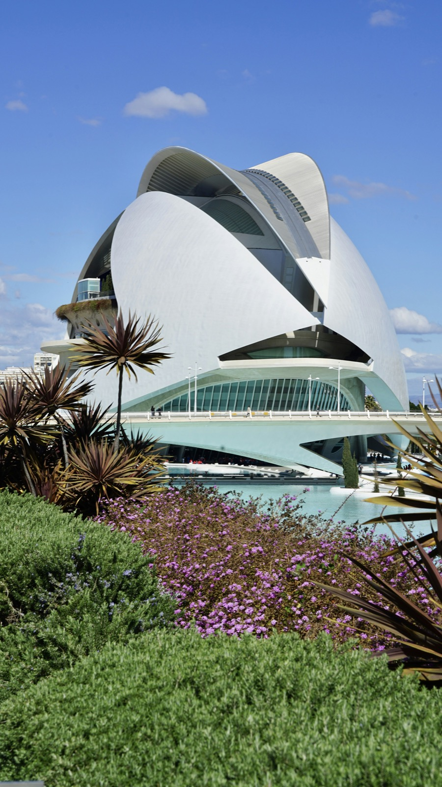

Writing your brief
Your brief
Layover is writing your brief
Sample data, not real
Every state of the journey widgets, one under another: brief, compare, hotel, days, booking, web results and “not known”. Loading is shapes in the form of the widget. An error says “Unavailable”, what failed, and Try again. A missing value says “Not known”, never zero.
brief_summary
The confirmed brief as chips, with an Edit action. The chat asks for anything missing, so the widget only appears when the brief has fields.
Not drawn: Empty, Error and Not known. The widget needs no outside source, and a missing field is asked for in the chat, never guessed.
Loading
Placeholder shapes in the form of the chips. The shimmer stops when the traveller asks for reduced motion.
Other state
Every field as a chip, with Confirm and Edit. Nothing is searched until the traveller confirms.
Other state
The traveller taps “£800 in total”. It turns into a field, and the summary updates before any search starts.
Other state
The same chips, plain, with “Confirmed by you” and an Edit link.
Other state
Once the traveller moves on, the brief folds to one row on the canvas.
comparison_table
Three places side by side: photo, fare, cost estimate, weather and “not known” rows, with a Choose action. From a 34 rem wide widget it shows three columns; narrower, as on a phone, it is a row of cards that scrolls sideways and snaps to each card. Each card has the same rows in the same order.
Loading
Each card fills in when its research agent finishes. Lisbon is done. Valencia and Valletta show shapes in the form of the card, and keep their names.
Swipe to see the other places.

Portugal
Spain
Checking Valencia
Checking fares, costs and weather
Malta
Checking Valletta
Checking fares, costs and weather
Not known
Valencia’s stay row says Not known, so its known costs are partial and “Against £800” is also Not known. Nothing is shown as £0.
Swipe to see the other places.
Portugal

Spain
Malta
Empty
It says which part of the brief rules places out (the budget, marked on its chip) and offers Edit brief.
Error
Valletta’s check failed. Its card says Unavailable and offers Try again, with no figure. The other two cards stay.
Swipe to see the other places.
Portugal
Spain
Malta
Layover could not check fares, costs or weather for Valletta just now. The other two places are not affected.
Other state
The traveller typed “Porto” to replace Valletta. The new card is named by what they typed and shows “Researching your place” with shapes, no figures and no photo until one is found. “Swap place” is on every card.
You swapped Valletta for Porto.
Swipe to see the other places.
Portugal
Spain
Researching your place
Checking fares, costs and weather for Porto.
Researching Porto
Other state
After “Choose Lisbon”, the comparison folds to “Compared 3 places: you chose Lisbon”, and “Show again” brings it back.
Compared 3 places: you chose Lisbon
LisbonYou chose thisPhoto: João Reguengos, Unsplashhotel_list
Hotels from OpenStreetMap with names, areas and no prices. The traveller picks one as the base for the days, or skips.
Loading
Hotel rows as shapes while Overpass answers.
Not known
Stars or a website that OpenStreetMap does not tag say Not known in that row. The guesthouse has neither.
Empty
The source answered but has none. The widget says what it looked for, and that the days start from the centre.
Error
Unavailable, what could not be checked, and two ways forward. No hotel is invented.
Other state
Sample Hotel Alfama is the base. The days start from it, and the other rows offer “Choose instead”.
Other state
The traveller skipped the hotel. The days start from the centre, and the widget says so.
Other state
The traveller picked another hotel. The days rebuild from it, and the widget says so.
itinerary_day
One day’s stops, each linked to its source, with notes where data is missing. Days are built from the chosen hotel.
Loading
Stops as shapes while the day is built.
Filled
Three stops from the chosen hotel. The castle has opening times. The walk comes from Wikivoyage, so it has its own label, which differs from the card’s Live.
Not known
Torre de Belém has no opening times in the source. That row says Not known. The other stop still shows its hours.
Empty
It says so, and suggests a wider area, rather than filling the afternoon with places that have no source.
Error
Unavailable, what failed, and Try again. No stops are shown from memory.
Other state
No hotel was chosen, so the days start from the centre of Lisbon, and say so in a banner.
Other state
The traveller changed the hotel, so the day was rebuilt from the new base. A note says so.
booking_approval
The sandbox booking summary. It pauses the flow: nothing is ordered until the traveller presses Approve. Every state carries “Sandbox: no real booking or payment”.
Not drawn: Not known. The widget always has a price or a state that says why it has none.
Loading
Layover is asking the Duffel sandbox for an offer. Shapes in the form of the summary. There are no buttons yet, so nothing can be approved.
Other state
The first step: the brief only says “May 2027, 5 nights”, so Layover asks for exact dates and never picks them. No search runs until the traveller chooses.
Which dates would you like to fly?
Other state
The traveller chose 14 to 19 May 2027. MAN to LIS, 2 adults, £192 for 2 (a sandbox price). Approve and Decline are equal choices. Nothing is ordered yet.
Other state
After Approve, the sandbox order runs and the widget shows its result.
Other state
Nothing was ordered. The traveller can search again.
Other state
At the price check the sandbox price was different. Layover shows both prices as plain words, never a crossed-out price, and asks again. Nothing is ordered.
Empty
The sandbox answered, but it has no offer for this route and date. The widget says so and offers a way on.
Error
Unavailable and what failed, with Try again. Nothing was ordered and no price is shown.
Other state
A hotel cannot be part of the sandbox booking yet, so the widget says so instead of hiding it.
web_results
Short quotes with links and the retrieval date, in the chat only. It always says “From a web search, not checked by Layover”, and it never has an “Add to trip” action.
Not drawn: Not known. The widget is its own caveat.
Loading
No placeholder card. The chat shows one step line while the search runs.
Can I take a pushchair on Lisbon trams?
Filled
Two quotes from example.org, retrieved 18 Nov 2026. It has its own label, never Live or Cached, and no Add to trip.
Can I take a pushchair on Lisbon trams?
Here are two results from a web search. Layover has not checked them, so read the pages before you rely on them.
Empty
No widget. Layover says it cannot help yet.
Can I take a pushchair on Lisbon trams?
I can’t help with that yet. The web search found nothing I can use.
Here is what I can do:
Error
No widget. The same line, plus what happened, and Try again.
Can I take a pushchair on Lisbon trams?
I can’t help with that yet. The web search did not answer just now.
not_known
A standalone answer when Layover does not have a value. It says what is missing, why, and what Layover can do instead. Layover writes it without an outside call.
Not drawn: Loading, Empty and Error. It is the Not known state itself.
Not known
Quiet italic label with an empty dot, then the three things a traveller needs to know.
compact-cards
On a phone, a widget that is also on the canvas shows in the chat as a compact card: its icon, its title and its label. A tap opens it in the Trip tab. One example for each kind that can be on the canvas.
Not drawn: web_results and not_known. They live in the chat, so they show in full there (see above).
Other state
Same card as the long-chat board. The booking card keeps its sandbox label.
Waiting for your OK: 5 parts, from Manchester (MAN), May 2027
3 places side by side: Lisbon, Valencia, Valletta
Cached, 1 to 6 days old
3 hotels, no prices
Live
3 stops from Sample Hotel Alfama
LiveCached, 4 days old
MAN to LIS, £192 for 2, waiting for your approval
LiveSandbox: no real booking or payment